Discover your Nightscout site
Privacy
Having the URL of your Nightscout site, anybody can view your BG and run reports of your data. It it strongly recommended that you secure your site.
It should look very similar to this when your uploader has added some data.
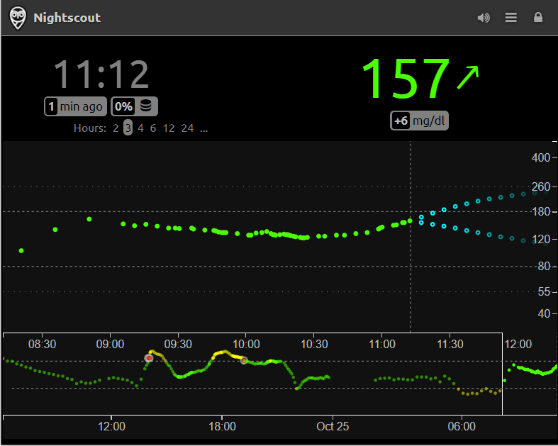{kind=link}
The central part will show your recent BG, you can select how many hours you want to be displayed with Hours: 2 3 4 6 12 24. The pale blue dots are the AR2 prevision as explained here. The lower part will display the last 48 hours and you can use the lower right selection to browse your old data.
{kind=link}
In the upper part you’ll see the current time of your site, your current BG (and how long ago it was measured) plus the delta with the previous measurement and a trend arrow. More explanations here.
Optionally you will see other indications (pills) that can be personalized in your variables and plugins like detailed here.
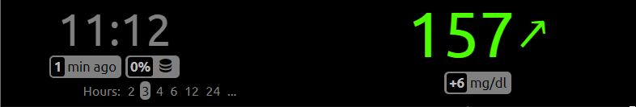{kind=link}
Authenticate yourself
By default you site opens read only, you need to authenticate using your API secret in order to modify settings and add treatments. Click on the lock icon, enter your API secret and click Update.
{kind=link}
This will unlock your careportal (if enabled) and edit (if enabled).
{kind=link}
Add a treatment (careportal)
Some uploaders will send treatments to Nightscout but others won’t. If you whish to do this manually, careportal is here for that.
+ will open an interface to manually enter treatments.
{kind=link}
In the Event Type drop down menu, you can select the treatment type you want to add. Additional available entries will depend on the plugins you enabled like Loop and OpenAPS/AAPS.
BG Check
BG check allows you to enter a blood glucose reading value from your Meter. With a CGM using Sensor reading doesn’t add much value.
Keep in mind the value will be inserted now (unless you modify the event time) and might not match your CGM value for non stable BG due to capillary time lag.
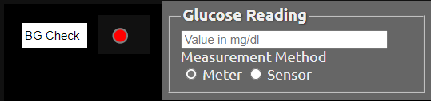{kind=link}
Correction Bolus
Correction Bolus allows you to enter the amount of insulin units injected for a correction.
It will show as a circle with the lower half blue, with its size depending on the amount of units, UI indicated below (depending on bolus rendering setting).
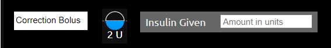{kind=link}
Meal Bolus
Carb Correction
Snack Bolus
These treatments allow you to enter the amount of food you eat (and eventually the matching insulin treatment).
It will show as a circle with the higher half white (if including carbs), with its size depending on the amount of food. Without carbs the upper half will not be filled with the white color. If you add proteins and fat, the amount will display in this order: carbs/proteins/fat. With insulin the lower half of the circle will fill in blue and units will be indicated below.
You can select the timing of carbs absorption in Carb Time (i.e. when did you or will you actually eat these carbs)
{kind=link}
Combo Bolus
Combo bolus allows you to insert the corresponding bolus if you use a pump. Insert the total amount of insulin in Insulin Given then break down in Split with the percentage administered now and the extended amount. Enter theDuration of the extended bolus below.
It will display as a classic bolus at treatment time and basal will reflect the extended amount for the selected duration.
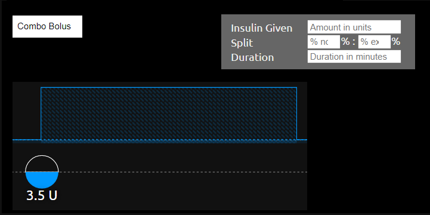{kind=link}
Announcement
Announcements are used to change your page title in order to alert viewers.
Entering another treatment will acknowledge the announcement and return your page title to default.
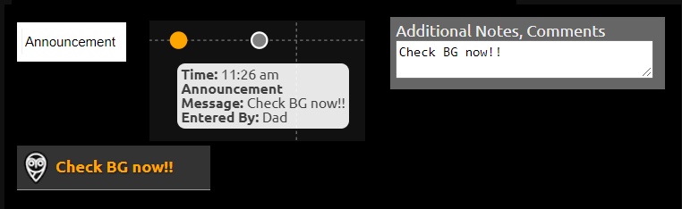{kind=link}
Note
Question
Notes and questions are a way to add comments and interact with others using your Nightscout page.
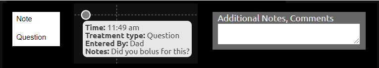{kind=link}
Exercise
You can log physical activities and specify the duration.
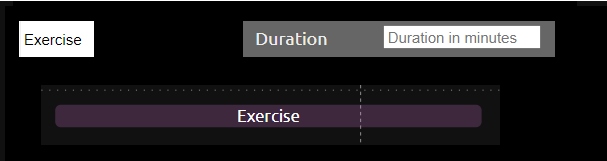{kind=link}
Pump Site Change cage
CGM Sensor Start sage
CGM Sensor Insert
CGM Sensor Stop
Pump Battery Change bage
Insulin Cartridge Change iage
Logging these events will help you remember various expirations dates and will update the corresponding pills if enabled.
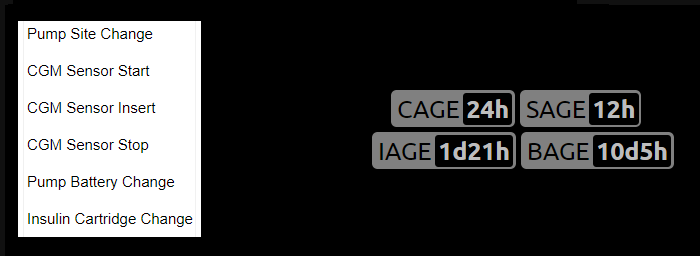{kind=link}
Temp Basal Start
Temp Basal Stop
You can indicate temporary basal rate changes using either a percentage change in Percent or the absolute rate in Basal value. You need basal to be enabled to visualize it.
{kind=link}
Profile Switch
If you have more than one profile stored, you can switch profile to keep your profile parameters synchronized.
For a temporary switch (like for physical activities) you can select the duration.
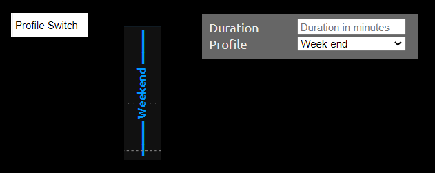{kind=link}
D.A.D. Alert
Log a Diabetic Alert Dog event.
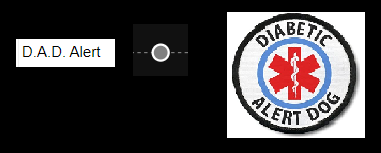{kind=link}
Edit Mode (edit)
For values still present on your display (last 48 hours), you can use Edit to move or delete bolus and correction treatments.
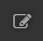 will change color to red in edit mode 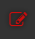.
{kind=link}
{kind=link}
Drag the treatment in the past or future in the black area to move both food and insulin.
If you want to move only insulin drop in the blue area.
For carbs only, in the white area.
To delete a complete treatment drop it in the red delete area.
Once done, exit the edit mode by de-selecting it (white on black background).
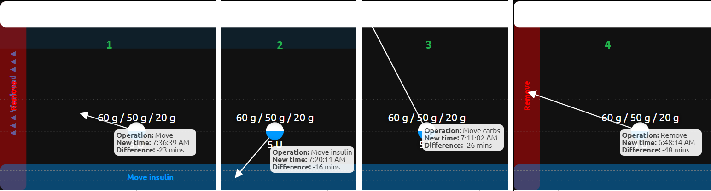{kind=link}
Drawer Menu
Once authenticated (click the lock icon up right) you’ll find many features in the drawer menu like access to advanced plugins and customizations of your web page (local view only, in order to modify the default view look into your Heroku variables here).

Reports will drive you to a powerful reporting toolset detailed here.
Profile Editor will allow you to modify and add profiles, see here.
Food Editor handles your customized food database.
Admin Tools gives you access control and database tools, see here.
Simple views:
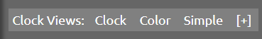{kind=link}
Clock- Shows current BG, trend arrow, and time of day. Grey text on a black background.
{kind=link}
Color- Shows current BG and trend arrow. White text on a color background.
{kind=link}
Simple- Shows current BG. Grey text on a black background.[+]- Create custom, simplified views using a predefined set of elements.
{kind=link}
List of available items:
SGV- Sensor Glucose ValueSGV age- time since the last SGV readSGV delta- change of SGV in the last 5 minutesTrend arrow- icon of the SG trendTime- current timeLine break- invisible item that will move following items to the next line (by default all are showing on the same level)
All visible items have Size property which allows to customize the view even more. Also, all items may appear multiple times on the view.
Apart from adding items, it is possible to customize other aspects of the views, like selecting Color or Black background. The first one will indicate current BG threshold (green = in range; blue = below range; yellow = above range; red = urgent below/above). Show SGV age option will make SGV age item appear Always or only if the predefined threshold is reached: Only after threshold. Breaching SGV age threshold will also make Color background turn grey and strike through SGV. Clock view configurator will generate an URL (available under Open my clock view! link) that could be bookmarked.
If you launch one of these views in a fullscreen view in iOS, you can use a left-to-right swipe gesture to exit the view.
Settings:
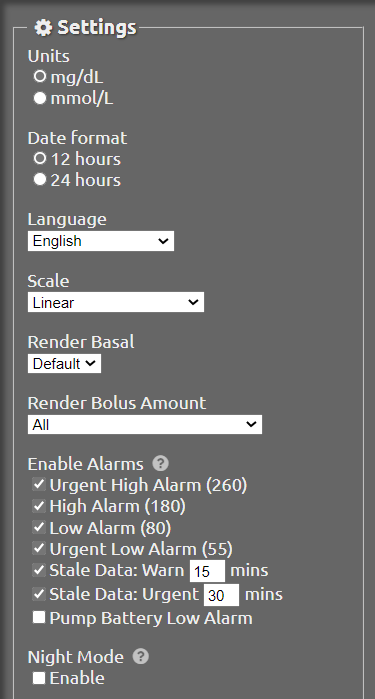{kind=link}
You can customize your view using Settings. Changes will only be applied to your current browser view, if you want to make these settings default for any browser you need to change directly the corresponding system variables indicated below and add the corresponding plugins in SHOW_PLUGINS.
You need to authenticate to save your settings.
Units DISPLAY_UNITS
Date Format TIME_FORMAT
Language LANGUAGE
Scale SCALE_Y
Render Basal BASAL_RENDER
Render Bolus Amount BOLUS_RENDER
Alarms ALARM
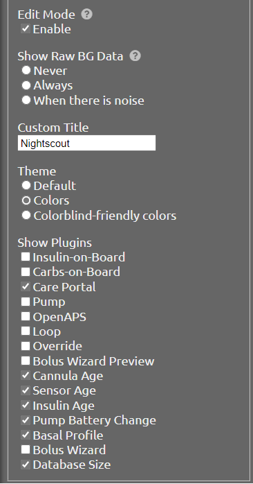
{kind=link}
Edit Mode EDIT
Show Raw BG Data rawbg
Custom Title CUSTOM_TITLE
Theme THEME
Show Plugins SHOW_PLUGINS
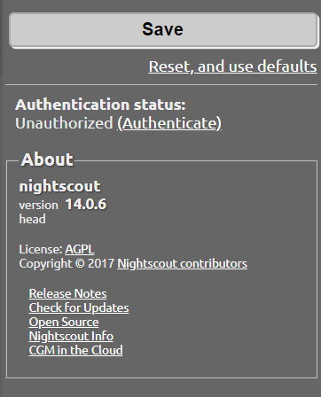
{kind=link}
In order to Save your changes you need to Authenticate, click Authenticate and enter your API Secret.
Reset, and use defaults will reverse your changes to defaults from your config variables.
In About you’ll see your current Nightscout version.
API
You can find information about your site API at:
https://{url}/api-docs[?token=TOKEN]
https://{url}/api/v2/properties.json[?token=TOKEN]